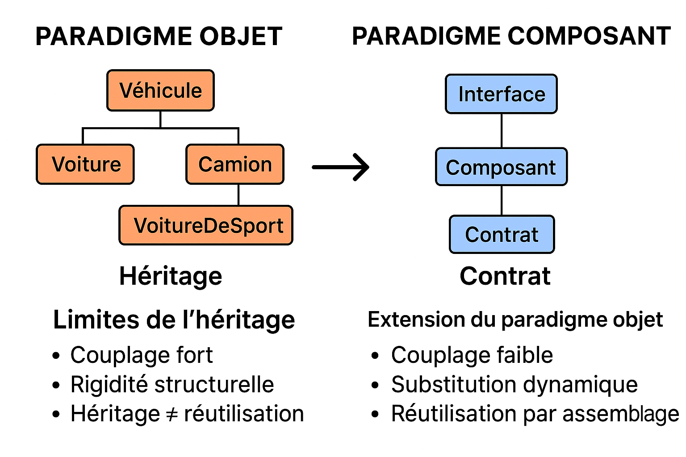

Analyse épistémologique et évolution de l'ingénierie logicielle
La systémique est une **épistémologie** : une manière de concevoir et d’analyser le réel, centrée sur les **relations**.
Un système est un ensemble d’éléments en **interaction dynamique**, organisé en fonction d’un **but ou d’une finalité**.
Principe de Totalité : le tout est plus que la somme des parties.
Théorie Générale des Systèmes (TGS) : principes universels (années 1950).
Cybernétique : centré sur la régulation et le contrôle par **Rétroaction**.
Systémique Complexe : domaines sociaux, cognitifs et écologiques (années 1970).
| Type | Description | Exemples |
|---|---|---|
| "Dure" | Modélisation mathématique et ingénierie (systèmes techniques). | Systèmes de production, modèles de simulation. |
| "Molle" | Approche socio-technique, centré sur la perception humaine. | Management, accompagnement du changement. |
| Complexe | Systèmes adaptatifs, théorie du chaos. | Écosystèmes, économie, cognition. |
Le Paradigme Objet (POO) transpose
les
concepts systémiques au
domaine du logiciel.
L'Objet est une unité autonome dotée d’un état interne et d’un comportement, comme un système.
Le POO est excellent pour la conception interne, mais faible pour l'intégration et l'évolution à grande échelle.
Le besoin d'une **Systémique Ouverte et Interopérable** a fait émerger le Paradigme Composant.
Le Composant corrige le POO en déplaçant le centre de gravité vers l'**interopérabilité contractuelle**.
| Aspect | POO (Fermé) | Composant (Ouvert) |
|---|---|---|
| Unité de base | Objet (Instance d'une classe) | Composant (Ensemble d'objets) |
| Vision | Système clos d'interactions internes | Système ouvert, inter-applications |
| Couplage | Fort (Références directes) | Faible (Interfaces et Contrats) |
| Interopérabilité | Locale (Même langage/runtime) | Hétérogène (Multi-langages/Plateformes) |
L’héritage est l'une des principales sources de **rigidité** et de **couplage fort**, contredisant l'autonomie systémique.
Le Composant remplace l'héritage par la **Composition** et la **Substitution** via les **Contrats**.
| Principe | Héritage (POO) | Contrat (Composant) |
|---|---|---|
| Nature de la relation | Relation d'essence (statique) | Relation fonctionnelle (dynamique) |
| But | Réutilisation du Code | Réutilisation du Service / Module |
| Conséquence | Rigidité, Couplage Fort | Flexibilité, Assemblage Reconfigurable |

Le paradigme composant a libéré la systémique de sa logique d’héritage hiérarchique (ontologique) en la transposant dans une logique de **coopération contractuelle et dynamique**.
On ne modélise plus le système interne, mais l'**orchestration** de l'écosystème de systèmes autonomes.
Principes, concepts abstraits et langages visuels
| Type | Focus | Exemple |
|---|---|---|
| Dessin manuel | Diagrammes graphiques | Draw.io, Visio, Yed |
| Texte → diagramme | Génération automatique | PlantUML, Mermaid |
| Atelier de modélisation | Manipulation du modèle abstrait | MagicDraw, Sparx EA, Papyrus, Modelio, Magic Draw |
“Un diagramme UML est une phrase dans un langage visuel : les symboles sont les mots, les compositions sont les phrases, et la grammaire garantit que le sens est correct et compréhensible.”